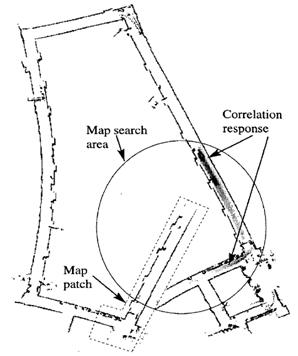
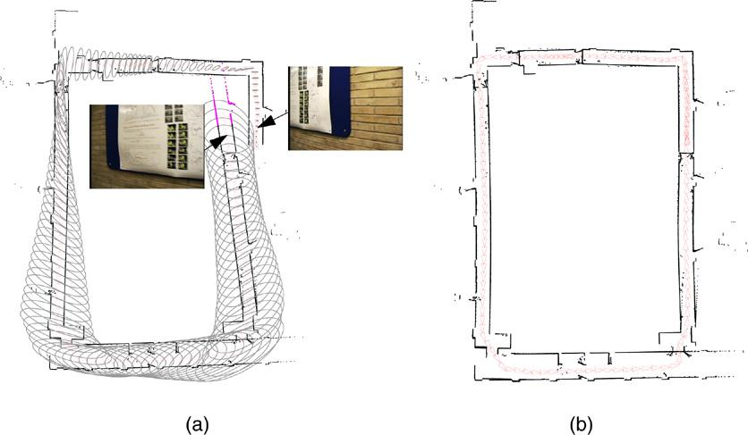

Проблема навигации мобильного робота заключается в позиционировании его
в пространстве при движении в недетерминированной среде. В общем виде
задачу навигации в помещении можно поставить следующим образом. Имеется
некоторое помещение, в котором расположен мобильный робот, оснащенный
сенсором, например, лазерным дальномером. Задана целевая точка, которую
робот должен достичь для выполнения некоторой задачи. Необходимо
определить закон управления мобильным роботом, который переведет его из
начального положения в целевую точку. На первый взгляд, задача кажется
простой, однако существует целый ряд проблем, условий и ограничений.
1. Робот должен определять свое положение в пространстве, чтобы
позиционироваться относительно целевой точки.
2. Необходимо обходить статические препятствия, для чего нужно строить
карту помещения.
4. Движение робота к целевой точке должно быть оптимальным по времени.
5. При управлении необходимо учитывать динамические ограничения робота.
Рассмотрим варианты решения данной задачи, существующие в настоящее
время.
В данной структурной схеме ключевыми элементами являются «Алгоритм
SLAM», «Планировщик пути» и «Алгоритм обхода препятствий».
Остальные элементы можно отнести к вспомогательным,
однако функционирование навигационной системы без них невозможно.
Взаимодействие с роботом, лазерным дальномером и оператором происходит
посредством соответствующих интерфейсов, входящих в состав системы.
Рассмотрим подробнее назначение каждого элемента предложенной структуры.
В рамках одной из основных задач планирования движения выделяют задачу
кратчайшего пути – поиск наиболее короткого пути, расположенного между
двумя
точками (вершинами) на графе, в которой уменьшается сумма весов ребер,
составляющих путь.
Кратчайшую цепь (простую) обычно называют геодезическая. Теория графов
относит задачу поиска кратчайшего пути к важнейшим классическим задачам.
Именно поэтому в настоящее время существует довольно широкий список
алгоритмов, направленных на решение данной задачи. Кроме того, данную
задачу
принято называть поиском минимального пути, а также задачей дилижанса.
Высокий уровень значимости этой задачи достигается благодаря точу, что
она имеет широкое практическое применение. Для примера, GPS-навигаторы
(рис.
3.), осуществляют поиск пути, расположенного между заданными позициями.
Вершинами, в данном случае, являются пересечения дорог, а сами дороги
между
пересечениями, в свою очередь, являются ребрами данного графа. Для
нахождения
самого короткого пути необходимо посчитать расстояние от перекрестка до
перекрестка, во всех возможных вариантах. Кроме данного примера, задача
поиска
кратчайшего пути активно применяется в мобильной робототехнике для
поиска
оптимального маршрута.
15Рис. 3. Поиск кратчайшего пути на примере автомобильного навигатора
Для планирования пути необходимо учитывать текущие положения и
занятость пути. Это необходимо для прокладки наиболее оптимального
(учитывая
необходимые критерии: кратчайший путь или наименьшее время) маршрута к
заданной позиции.
Вследствие того, что выделяют огромное число вариаций
данной задачи, разработан целый ряд специальный алгоритмов для решения
задачи
поиска кратчайшего пути на графе, которые представлены ниже [3].
Алгоритм Дейкстры (Dijkstra’s algorithm)
С использованием данного алгоритма поиска кратчайшего пути, можно
найти расстояние из одной вершины графа до существующих других.
Необходимо
учитывать, что данный алгоритм возможно применить только для тех графов,
у
которых веса ребер не отрицательные.
Каждая вершина из графа V должна быть сопоставлена определенной метке
– минимальным известным расстоянием из определенной вершины до вершины
а.
Данный алгоритм является пошаговым, то есть при наступлении каждого
шага,
алгоритм «посещает» определенную из вершин и старается уменьшить метку.
Завершается алгоритм в тот момент, когда каждая из вершин посещена.
16Определение. Метка начальной вершины a определяется как 0, остальные
же
вершины приравниваются бесконечности. Таким образом, это отражает тот
факт,
что расстояние от вершины а до любой другой неизвестно. Каждая из вершин
графа
в этот момент определяется как непосещенная.
Рис. 4. Этап определения графа алгоритма Дейкстры
Этап алгоритма. Завершение алгоритма происходит в том случае, при
котором посещена каждая из вершин. Если же все вершины еще не посещены,
то
необходимо выбрать такую вершину u, у которой имеется минимальная метка.
Необходимо в рамках данного алгоритма рассматривать возможные пути, где
вершина u будет предпоследней точкой маршрута. Вершина, в которую
приходит
ребро из u необходимо назвать соседом данной вершины. У каждой соседской
вершины вокруг u, помимо посещенных, рассматривается новая длина пути,
равная
сложению текущего значения метки и расстоянию до ребра, которое
соединяет u с
соседской вершиной. В случае, когда длина меньше величины соседской
метки,
данная метка изменяет свое значение на полученную длину. Изучив все
соседские
вершины, вершина u помечается как посещенная и алгоритм повторяется [4].
Алгоритм Беллмана — Форда (Bellman–Ford algorithm)
Данный алгоритм поиска кратчайшего пути позволяет определить путь до
вершин взвешенного графа. Ребра могут иметь отрицательный вес, если
сравнивать
с алгоритмом Дейкстры.
17В
рамках
данного
алгоритма
используются
ориентированные
или
неориентированные графы (для примера G) с взвешенным значением ребер.
Длина
пути, в данном случае, является суммой весов каждого ребра, включённого
в
данный путь. Необходимо отыскать кратчайший путь до каждой вершины графа
из
определенной точки s.
Рис. 5. Граф G алгоритма Алгоритм Беллмана — Форда
Стоит указать, что кратчайшей путь может отсутствовать. Граф, имеющий
отрицательный суммарный вес цикла, содержит бесконечно малый путь между
вершинами цикла (при каждом обходе циклом уменьшается длина пути). Цикл,
сумма весов рёбер которого отрицательна, называется отрицательным циклом
[5].
Алгоритм поиска A* (Algorithm A star)
Данный алгоритма поиска позволяет определить стоимость пути от
начальной точки до целевой, используя первое наилучшее совпадение в
графе.
Обход вершин определяет эвристическая функция «длина пути + цена»
(принято обозначать f(x)). Данная функция получается путем сложения двух
функций:
1) Стоимость (цена) достижения вершины и начального положения (принято
обозначать g(x) – может являться и эвристической, и нет).
2) Эвристическая оценка расстояния от заданной точки до конечной
(принято
обозначать h(x)).
18Функция h(x) должна быть допустимой эвристической оценкой, то есть не
должна переоценивать расстояния к целевой вершине. Например, для задачи
маршрутизации h(x) может представлять собой расстояние до цели по прямой
линии, так как это физически наименьшее возможное расстояние между двумя
точками.
Рис. 6. Использование алгоритма поиска A*
С использованием данного алгоритма все пути рассматриваются пошагово, и
идут от заданной точки к целевой, до тех пор, пока не будет достигнута
минимальная стоимость пути. В начале поиска, что характерно для всех
информационных алгоритмов поиска, рассматриваются «кажущиеся» маршруты к
целевой точки. Отличительной особенностью этого алгоритма от «жадного»,
является то, что данный алгоритм производит учет всего пройденного пути.
Функция g(x), в свою очередь, является показателем стоимости маршрута от
начальной позиции, а в «жадном» алгоритме данная функция отвечает только
за
стоимость пути от предыдущей вершины.
При начале поиска рассматриваются вершины, граничащие с начальной
точкой; выбирается вершина с минимальным значением f(x), и алгоритм
переходит
на этот узел. Во время каждой итерации алгоритмом рассматривается
множество
путей из начала графа до не посещённых вершин, которые размещаются в
специальной очереди с разными приоритетами. Данный приоритет можно
19определить по выражению f(x) = g(x) + h(x). Итерации продолжаются до
тех пор,
пока функция f(x) конечной вершины графа не будет наименьшей из всех
значений
в очереди, либо, когда закончится просмотр графа. Итоговое решение
выбирается
из всех решений, у которых наименьшая стоимость.
Алгоритм A* всегда может найти решение, при условии его существования,
и относится к полным алгоритмам [6].
Алгоритм поиска D* (Algorithm D star)
Алгоритм поиска кратчайшего пути во взвешенном ориентированном графе,
где структура графа неизвестна заранее или постоянно подвергается
изменению.
Постановка задачи. Дан взвешенный ориентированный граф G(V, E). Даны
вершины f и t. Требуется в процессе движения по кратчайшему пути в графе
G
обновлять значения функции g(s) при поступлении новой информации о графе
G.
На основе алгоритма А* описывается алгоритм D*, который способен
определ
1.6 Локализация и построение карты местности
Третьи ключевым вопросом который необходимо рассмотреть является
задача локализации и построение карты местности. Основным способом
решения
данной
задачи
является
использование
алгоритмов
SLAM
(Simultaneous
Localization and Mapping). В рамках данной работы рассматривается именно
этот
тип алгоритмов, так как именно он обладает высокой точностью локализации
и
достаточным быстродействием для работы в реальном времени. Здесь и далее
под
реальным временем будем понимать ситуацию, когда время, затраченное на
обработку одного скана, не превышает период поступления входной
информации.
На данный момент существует множество различных алгоритмов SLAM,
отличающихся как по типу входной информации, представлению окружающего
пространства в виде карты, так и по методам обработки этой информации.
Во-
первых, введем классификацию алгоритмов локализации по размерности
картографируемого пространства:
1) двумерная локализация на плоскости (2D-SLAM);
2) трехмерная локализация в пространстве (3D-SLAM);
3) цветовая локализация по R, G, B компонентам изображения (Colour-
SLAM);
274) цветовая трехмерная локализация в пространстве (6D-SLAM).
Эти характеристики зависят напрямую от используемого сенсора. При
использовании наиболее простых лазерных дальномеров входной информацией
для алгоритма является двумерное горизонтальное сечение рельефа
окружающих
объектов, соответственно для обработки применяется 2D-SLAM. При наличии
дополнительной оси сканирования можно получить трехмерное облако точек,
дающее представление объектов помещения с учетом их взаимного
расположения
в пространстве, поэтому здесь применим 3D-SLAM. Существуют алгоритмы,
например, описанные в работе, оценивающие положение робота по
изображению с
установленной на нем цветной видеокамеры, – это алгоритмы цветовой
локализации. Однако в наше время набирают популярность сенсоры,
позволяющие
получить трехмерное цветное изображение объектов, к примеру, TOF-камеры,
Kinect и им подобные; для обработки таких изображений с целью
локализации и
построения карты применяются алгоритмы 6D-SLAM. Следует отметить, что
подавляющее большинство алгоритмов локализации на плоскости могут быть
расширены на трехмерное пространство.
Кроме
того,
следует
разделить
глобальную
локализацию
и
последовательную. Глобальная локализация позволяет определить положение
робота на карте без начального приближения. Еще одна особенность
алгоритмов
SLAM данного типа – это возможность замыкания циклов, т.е. распознавание
уже
пройденного участка карты с последующей релаксацией всей карты вдоль
траектории робота. Последовательная (относительная) локализация
определяет
изменение положения робота между двумя последовательными сканами.
Алгоритмы этого типа, как правило, дают более точный результат
определения
положения мобильного робота, по сравнению с глобальными алгоритмами
SLAM,
но должны выполняться в реальном времени. Однако, если данный алгоритм
не
сошелся хотя бы один раз, дальнейшее его использование невозможно без
дополнительных поправок. Для достижения наилучшего результата по
точности и
надежности локализации необходимо использовать оба алгоритма совместно.
28Процесс последовательной локализации имеет несколько
вариантов
названий: сопоставление сканов (scan matching) или регистрация сканов
(scan
registration), т.к. алгоритм изначально был предназначен для
последовательного
сканирования
геометрической
некоторого
модели.
объекта
с
Выделают
целью
получения
следующие
его трехмерной
основные алгоритмы
последовательной локализации:
Алгоритм ICP.
Алгоритм IDC.
Алгоритм Hector Mapping.
Методы экстремальной навигации.
Алгоритм GMapping.
Метод рекуррентной фильтра.
Методы глобальной локализации основаны на выделении ориентиров из
скана и их распознавании, чтобы получить геометрическое положение
робота. К
методам данного типа относятся:
• Марковская локализация;
• локализация при помощи обобщенного фильтра Калмана (EKF);
• локализация методом фильтра частиц [15].
Таким образом выделают три основных элемента при проектировании
системы управления движением:
Поиск кратчайшего пути.
Обход препятствия.
Локализация и построение карты местности.
В настоящее время для навигации робота в условиях недетерминированной среды, применяются различные алгоритмы картографирования среды, определения своего положения в пространстве относительно составленной карты, а также решения задачи поиска возможной траектории движения. Метод SLAM (Simultaneous Localization and Mapping), позволяет одновременно решать две задачи – картографирования неизвестной среды и локализации робота [].На данный момент существует множество различных алгоритмов SLAM, отличающихся как по типу входной информации, представлению окружающего пространства в виде карты, так и по методам обработки этой информации.
Рассмотрим базовые принципы алгоритмов SLAM. В качестве точки отсчета
алгоритмы SLAM используют начальное положение робота, относительно
которого строятся карта и траектория движения.
Задача SLAM разделяется на несколько подзадач (см. рисунок 1) [3]:
а) вычисление текущего положения робота на основе данных с одометрических датчиков и камеры;
б) нахождение новых ключевых точек, т. е. предположительного препятствия в пространстве;
в) ассоциация новых и старых данных (англ. Data association) — если новую ключевую точку можно сопоставить со старой, то вес старой ключевой точки увеличивается. В противном случае, новая ключевая точка добавляется в карту местности;
г) хранение карты местности в памяти.
В перечислении б такими точками могут служить легко распознаваемые ориентиры, часто встречающиеся в пространстве, — углы стен, прямые линии, контрастные точки (для видеокамеры). И здесь очень важна однозначная идентификация ключевой точки. Робот, встречая ориентир, который он уже видел, должен точно его распознать. Для однозначного распознавания одной ключевой точки от другой существуют различные дескрипторы. Дескриптор выполняет поиск ключевых точек и запоминает их отличительные признаки. Иными словами, об одной и той же ключевой точке могут быть получены данные из разных положений робота в пространстве. При этом новые ключевые точки будут временными, пока не будет проведена ассоциация.
Эти подзадачи могут быть реализованы разными способами, комбинации которых дают различные варианты исполнения алгоритмов.
Рисунок 1 – Схема SLAM-алгоритма
Поскольку в задании на выпускную работу в качестве датчика была дана
времепролетная камера Microsoft Kinect 2.0, которая является RGB-D
сенсором, то далее будут рассмотрены алгоритмы RGB-D SLAM.
RTAB-Map (Real-Time Appearance-Based Mapping) – визуальный алгоритм
SLAM на основе графа для RGB-D камер. Использует визуальный детектор
замыкания петель для оценки, откуда получен новый ключевой кадр – из
прежнего или нового положения (cм. рисунок 2).
Для ассоциации новых и старых данных алгоритм сопоставляет кадры,
полученные с разных ракурсов.
Рисунок 2 - Cхема работы RTAB-Map
Сопоставление кадров, в зависимости от предварительных установок, может
достигаться за счет использования различных детекторов и дескрипторов
ключевых точек: FAST, SIFT, SURF, BRIEF, BRISK, ORB [4].
- Детектор FAST (Features from Accelerated Test) [5]
Cуществуют детекторы определяющие ключевые точки на изображении, в
частности, углы, применяя некоторую модель или алгоритм напрямую к
пикселям исходного изображения. Альтернативный подход состоит в
том, чтобы использовать алгоритмы машинного обучения для тренировки
классификатора точек на некотором множестве изображений. FAST-детектор
строит деревья решений для классификации пикселей. Для каждого пикселя p
изображения рассматривается окружность с центром в этой точке, которая
вписана в квадрат со стороной 7 пикселей (см. рисунок 3). Окружность
проходит через 16 пикселей окрестности.
- Дескриптор SIFT (Scale Invariant Feature Transform) [5]
Для формирования дескриптора SIFT сначала вычисляются значения магнитуды
и ориентации градиента в каждом пикселе, принадлежащем окрестности
ключевой точки размером 16x16 пикселей. Магнитуды градиентов при этом
учитываются с весами, пропорциональными значению функции плотности
нормального распределения с математическим ожиданием в рассматриваемой
ключевой точке и стандартным отклонением, равным половине ширины
окрестности
(веса Гауссова распределения используются для того, чтобы уменьшить
влияние на итоговый дескриптор градиентов, вычисленных в пикселях,
находящихся дальше от ключевой точки).
- Дескриптор SURF (Speeded up Robust Features) [5]
Относится к числу тех дескрипторов, которые одновременно выполняют поиск
ключевых точек и строят их описание, инвариантное к изменению масштаба и
вращения. Кроме того, сам поиск ключевых точек обладает инвариантностью
в том смысле, что повернутый объект сцены имеет тот же набор ключевых
точек, что и образец.
- Дескриптор BRIEF (Binary Robust Independent Elementary Features) [5]
Цель создания BRIEF-дескриптора состояла в том, чтобы обеспечить
распознавание одинаковых участков изображения, которые были сняты с
разных точек зрения. При этом ставилась задача максимально уменьшить
количество выполняемых вычислений.
- BRISK (Binary Robust Invariant Scalable Key-points) [6]
Данный метод представлен в 2011г. Детектирование ключевых точек
осуществляется с помощью FAST, в качестве дескриптора используется
BRIEF, но в их работу были внесены некоторые изменения. BRISK отличается
от остальных методов тем, что он определяет наибольшее количество
ключевых точек, но, к сожалению, в них попадает и цифровой шум, при этом
на фильтрацию образовавшихся ложных связей затрачивается значительное
количество времени, хотя итоговая точность высока.
- ORB (Oriented FAST and Rotated Brief) [6]
Представлен также в 2011г. В его основе лежит комбинация таких
алгоритмов как детектор FAST и дескриптор BRIEF с некоторыми
улучшениями. Метод ORB имеет лучшую скорость в вычислении ключевых точек
и расчета их дескрипторов, что позволяет использовать его в задачах, где
необходима обработка изображений в реальном времени. Одной из таких
задач является слежение за движущимся объектом. Но высокая скорость
работы сказывается на точности сопоставления изображений не в лучшую
сторону. Наличие цифрового шума или размытие изображений еще больше
ухудшает результаты программы.
Рассмотрим подробнее работу RTAB-Map.
Каждый узел графа (ключевой кадр) содержит свою позицию в 3D
пространстве, цветную 3D карту глубины и список ключевых точек
карты, которые обнаружены на данном изображении. Рёбра графа отражают
связь между этими узлами. Связь создаётся только между соседними узлами
или узлами, между которыми детектируется замыкание петли [7].
Детектор замыкания петель осуществляет поиск соотношения между дескрипторами ключевых точек текущего ключевого кадра и дескрипторами ключевых точек, обнаруженных ранее (см. рисунок 4). Если количество общих ключевых точек у текущего ключевого кадра и у кадра с наибольшим соответствием превышает определённый порог, то происходит замыкание петли. При этом позиция текущего кадра уточняется для совпадения ключевых кадров с предыдущим, а остальные узлы петли оптимизируются. И добавляется соответствующее новое ребро [7].
После нахождения замыкания петли позиции графа оптимизируются с целью минимизации ошибки в графе.

Рисунок 4 - Работа детектора замыкания петель
Алгоритм работы:
- первый кадр становится ключевым. Его карта глубины добавляется на 3D
кадр. А дескрипторы ключевых точек в “мешок слов” (англ. bag of words).
Bag of words – это метод классификации изображений, использует в
качестве описания гистограмму вхождений отдельных шаблонов в
изображение;
- следующий ключевой кадр будет добавлен, только если робот переместится
на некоторое расстояние или прошёл заданный промежуток времени;
- положение нового ключевого кадра уточняется благодаря соотношению
ключевых точек двух кадров и расстоянию, имеющемуся благодаря карте
глубины;
- выполняется проверка обнаружения замыкания петли;
- 3D карта нового ключевого кадра добавляется на карту. А дескрипторы
ключевых кадров в bag of words. И процесс начинается сначала.
Точность построения карты определяется размером ячейки сетки графа и
составляет 0,05 м [7].
Трехмерная карта, полученная с помощью RTAB-Map, представлена на рисунке
5.
Рисунок 5 – Трехмерная карта, полученная с помощью RTAB-Map
ElasticFusion позволяет строить трехмерную карту окружения.
Алгоритм не использует граф посещённых локаций и полностью опирается
только на построенную карту при локализации и поиске замыканий петель.
Для поиска замыканий алгоритм случайно выбирает небольшие части карты, с
которыми впоследствии сравниваются новые кадры. После нахождения
замыкания участок карты деформируется в соответствии с накопленной
ошибкой позиционирования.
Точность построения карты составляет 0,03 м [8].
Трехмерная карта, полученная с помощью ElasticFusion, представлена на
рисунке 6.
Рисунок 6 – Трехмерная карта, полученная с помощью ElasticFusion
RGBDSLAM – это решение для RGB-D камер, которое позволяет получать трехмерную карту окружения в виде цветного облака точек (см. рисунок 7) [9]. Это достигается за счет использования визуальных дескрипторов ключевых точек SURF или SIFT для совмещения пар полученных изображений. Кроме того используется метод RANSAC для надежной оценки трехмерного преобразования между ними.
RANSAC (RANdom SAmple Consensus) — стабильный метод оценки параметров модели на основе случайных выборок. Схема RANSAC устойчива к зашумлённости исходных данных. Метод был предложен в 1981 году Фишлером и Боллесом. Схема работы метода RANSAC заключается в циклическом повторении поиска матрицы трансформации между случайно выбираемыми четырьмя ключевыми точками на одном изображении и соответствующим им четырём точкам на втором [10].
Возможность выбора между двумя вариантами дескрипторов, позволяет
работать алгоритму в различных условиях освещения.
Чтобы выполнить обработку, текущее изображение сопоставляется с
предыдущим. Впоследствии создается граф, узлы которого соответствуют
кадрам с камеры, а ребра которого соответствуют оцененным трехмерным
преобразованиям. Затем граф оптимизируется для уменьшения накопленных
ошибок позиционирования.
Точность построения карты 0,05 м [8].
Рисунок 7 – Трехмерная карта, полученная с помощью RGBDSLAM
ORB-SLAM (Oriented FAST and Rotated BRIEF SLAM) – визуальный
монокулярный алгоритм SLAM [11].
Существует модернизация данного алгоритма для применения с RGB-D
камерами и стереопарами.
Алгоритм использует детектор и дескриптор ключевых точек ORB, и bag of
words оптимизацию. Метод основан на отслеживании ключевых точек, в
результате чего, в качестве ключевого кадра выступает изображение с
набором ключевых точек и найденных на обоих кадрах. Получаемые
ORB-дескрипторы ключевых точек инвариантны к углу зрения, повороту
камеры и освещенности. Это позволяет алгоритму с высокой точностью и
надежностью отслеживать замыкания петель, а также обеспечивает высокую
надежность при релокализации.
По сравнению с другими дескрипторами ORB вычисляется за меньшее время.
Точность построения карты 0,05 м.
Трехмерная карта, полученная с помощью ORB-SLAM, представлена на
рисунке 8.
Рисунок 8 – Трехмерная карта, полученная с помощью ORB-SLAM
Важным критерием сравнения является совместимость с датчиками. В
задании на выпускную работу в качестве датчика была дана времепролетная
камера Microsoft Kinect 2.0.
Таблица 1 – Сравнительная характеристика реализаций SLAM-алгоритмов
Реализация
RTAB-Map
ElasticFusion
RGBDSLAM
ORB-SLAM
Использованные методы
RANSAC,
bag of words
Surfels
RANSAC
bag of words
Детекторы
SURF, FAST, ORB
н/д
SURF, SIFT
ORB
Дескрипторы
SURF, SIFT, BRIEF, ORB
н/д
SURF
ORB
Точность составления карты , м
0,05
0,03
0,05
0,05
Адаптирована для использования с RGB-D сенсором Kinect 2.0.
Да
Нет
Нет
Нет
Интеграция с ROS
Да
Нет
Да
Нет
Из таблицы 1 можно сделать сравнительный вывод в пользу реализации
RTAB-MAP. Несмотря на то, что он менее точно выполняет локализацию по
сравнению с ElasticFusion, он обладает рядом преимуществ:
- позволяет использовать разные детекторы и дескрипторы в зависимости от
задачи;
– он единственный адаптирован для использования с Kinect 2.0.
В данном разделе были рассмотрены наиболее известные и представляющие интерес реализации метода одновременной локализации и построения карты. Аналитический обзор показал, что большинство существующих реализаций не адаптировано для использования с времепролетной камерой Microsoft Kinect 2.0.
В рамках обзора проведен анализ реализаций, учитывающий достоинства и недостатки каждого алгоритма. Результат анализа сведён в таблицу 1, на основании которой был произведен выбор в пользу реализации RTAB-Map для дальнейшего использования в качестве основы для решения задачи навигации.
Метод SLAM позволяет составить карту неизвестной среды. Но для решения задачи навигации дополнительно требуется выполнение следующих подзадач: автоматическое планирование маршрута, управление перемещениями робота и обход препятствий, коррекция траектории движения робота. Для этого требуется разработка собственного программного обеспечения.
Целью настоящей работы является разработка и практическая реализация алгоритмов навигации робота в неизвестной среде, которые полностью решают задачу навигации, используя при этом возможности времепролетной камеры Microsoft Kinect 2.0.